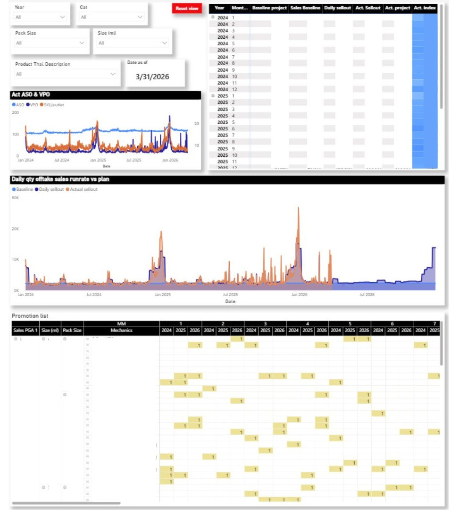
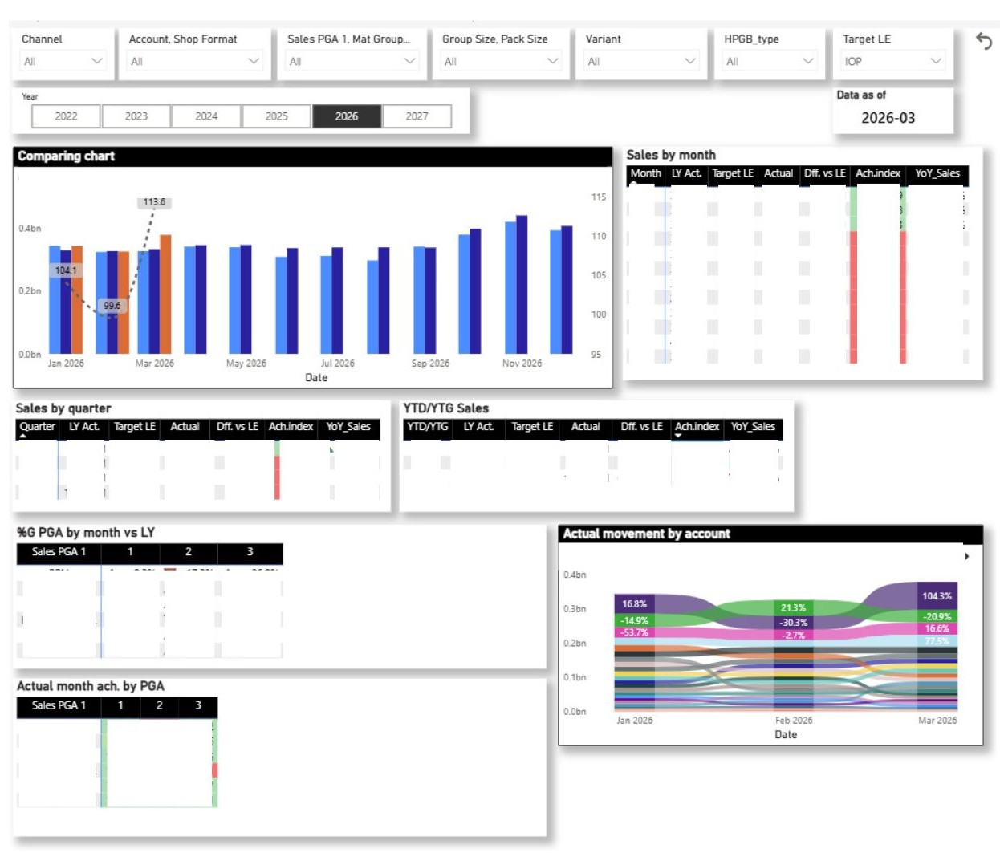
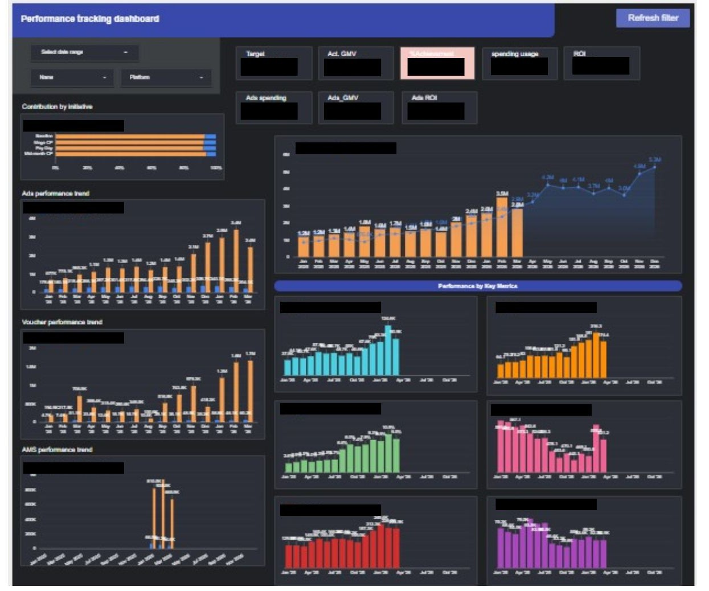
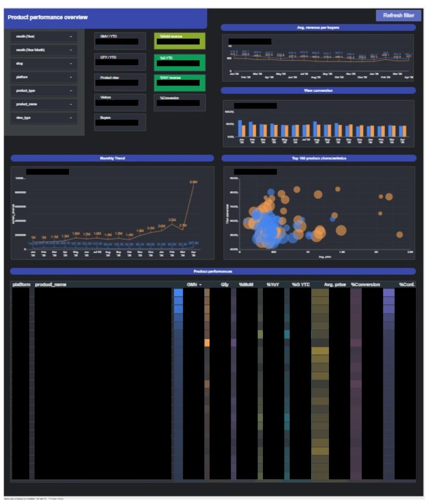
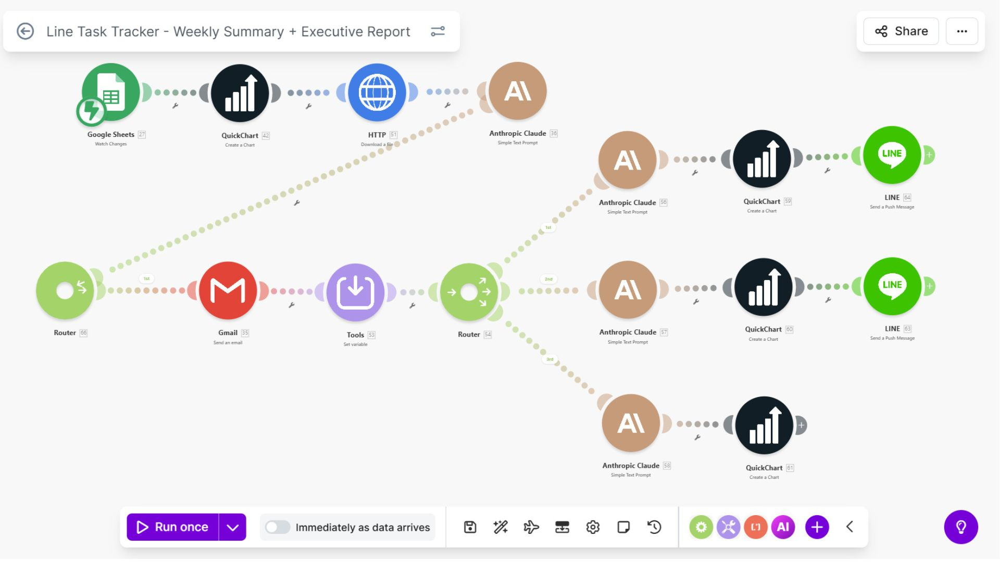
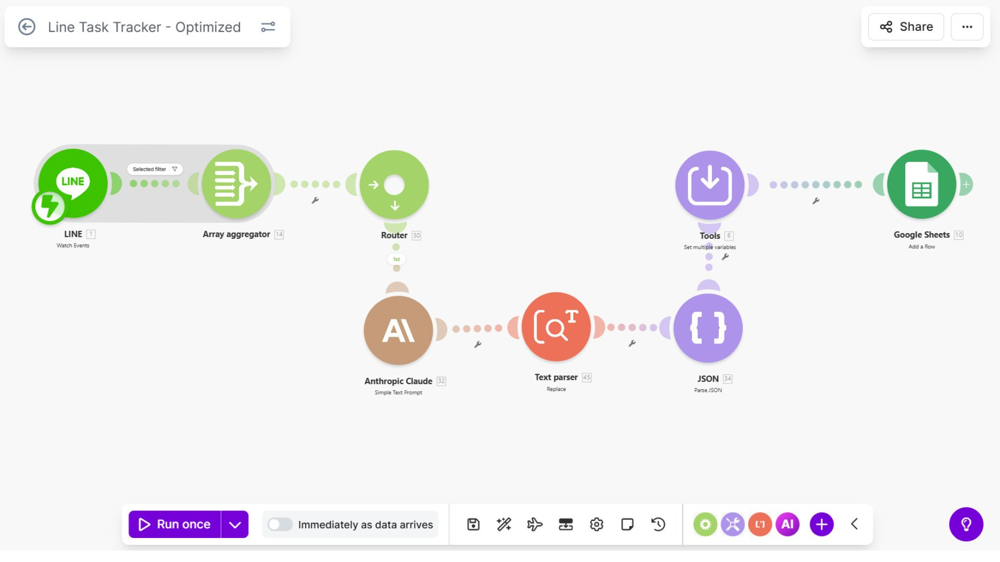

Selected Work
ML Prediction of E-commerce Customer Satisfaction Score
Designed and implemented a multi-class classification pipeline to predict customer satisfaction (Low /
Average / Good / Excellent) from the Olist Brazilian e-commerce dataset (~102,700 orders). Proposed novel
feature engineering around delivery duration and product rating history.
Links:
Conference ·
IEEE Paper ·
github
- Engineered delivery performance, seller & product rating mean/SD features from scratch — top 4 features in RF importance ranking
- Compared RF, K-NN, and Logistic Regression against a baseline (average product rating) — RF outperformed all in every metric
- Applied SMOTE oversampling + RandomUnderSampler + GridSearchCV (StratifiedKFold n=5) to handle severe class imbalance
- Prevented data leakage by computing rating features on train set only, then mapping to test set by seller/product ID
- Published in IEEE; research cited as evidence that delivery duration + rating score are primary satisfaction drivers
Makro Offtake Monitoring Dashboard
Built and owned an end-to-end Power BI dashboard tracking General Trade (GT) channel offtake for Makro. Consolidated complex multi-source sales datasets via SQL/Power Query, enabling weekly and monthly performance reviews for senior and executive management.

- Automated SQL/Power Query pipelines to replace manual Excel consolidation, reducing data preparation time significantly
- Dashboard used by Regional Sales Managers to identify offtake gaps and adjust promotional spend in near real-time
- Integrated forecast accuracy and bias KPIs aligned to the 365 promotion calendar and corporate targets
- Bridged sales forecasting with supply chain planning, directly lifting On-Shelf Availability by 4.7 percentage points
Bottom-Up SKU-Level Planning File & G2N Enhancement
Designed a Bottom-Up planning model at SKU × region granularity, enabling Regional Sales Managers to integrate field-level market knowledge into the corporate forecast. Also built a Gross-to-Net (G2N) financial control layer for transparent budget oversight.

- Replaced manual multi-step Excel processes used by 10+ Regional Managers with a structured, error-resistant planning file
- G2N enhancement provided CFO-level visibility into trade spend, promotional discounts, and net revenue by account
- Standardized the annual and monthly planning cycle cadence across the entire GT commercial team
- Won Best Head Office Support award (Sales Operations & Capability department, Q3 2024) for impact delivered
E-commerce Performance Dashboard (Looker)
Led the development of an e-commerce performance dashboard that provided real-time visibility into key business metrics, enabling stakeholders to identify performance gaps and make faster, data-driven decisions.


- KPI tracking: GMV, Orders, Conversion Rate, AOV
- Performance breakdown by category and seller
- Enabled faster identification of underperforming sellers
- Supported campaign and budget optimization decisions
- Reduced manual reporting workload
AI Chatbot for Data Access
Built an AI chatbot that streamlined data access for business users, significantly reducing manual workload and improving the speed of decision-making.


- Natural language query for business users
- Integration with internal data sources
- Real-time response for key metrics
- Reduced manual reporting workload
- Improved speed of data access